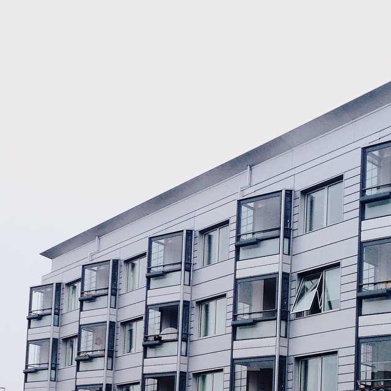
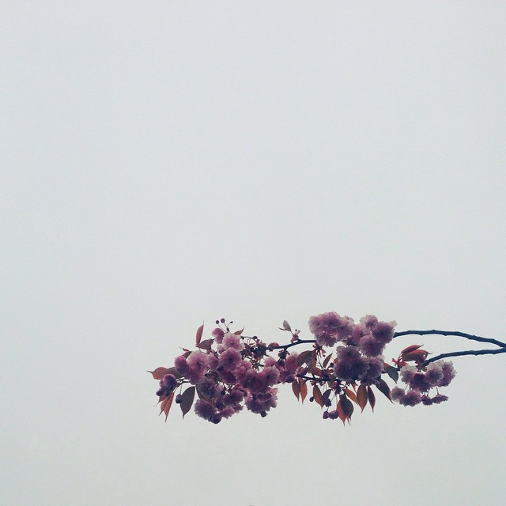
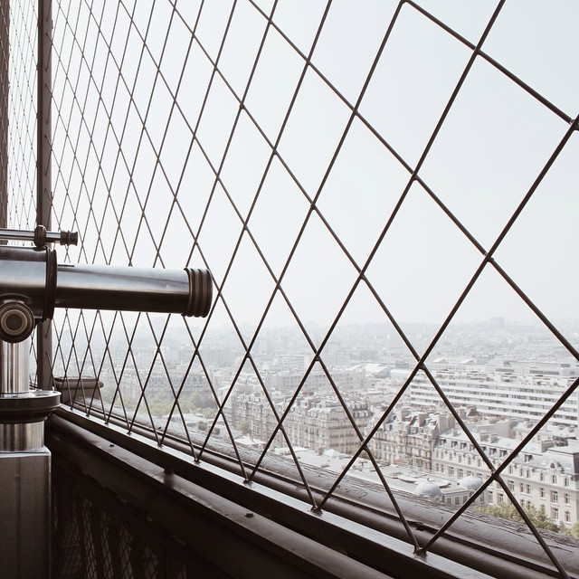
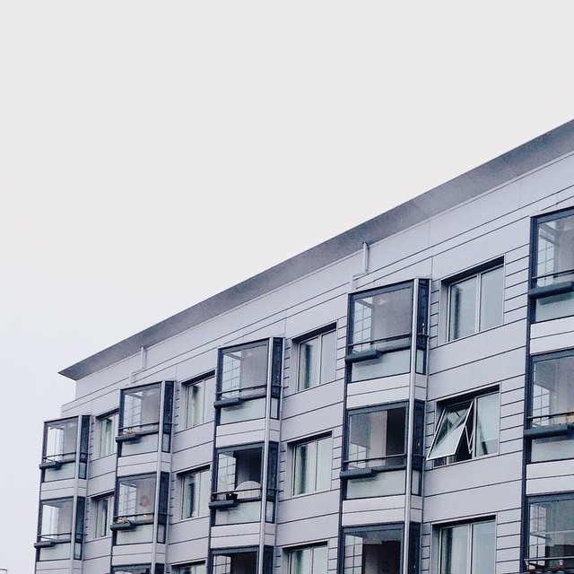
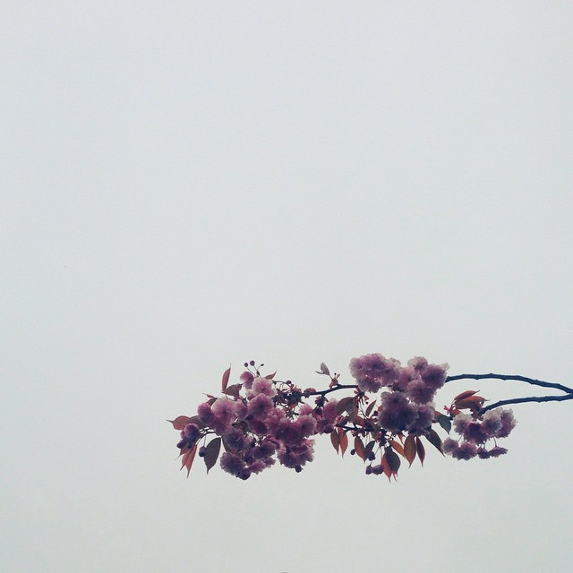
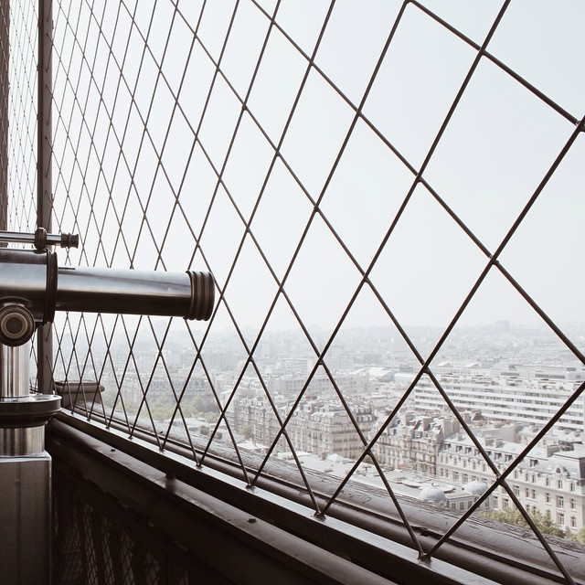

Om mig
Begyndelsen
Mit arbejde med foto, design og grafik starter i de sidste timer af 2014.
I mange år har jeg taget billeder og elsket at arbejde med at redigere dem på alle mulige måder. Min mobil er ved randen af billeder og ved en eftertælling tidligere i december har jeg mellem 25 og 30.000 billeder liggende fordelt på min computer og diverse eksterne harddiske, men næsten ingen af dem er nogensinde set af andre end mig. På de sociale medier er det billeder med vennerne og fest billeder der bliver postet.
Så nytårsaften kigger jeg på min instagram profil hvor der ligger i retningen af 150 billeder og mit nytårsforsæt bliver således at der for enden af året skal være 1000 billeder på min profil. Det er 800 billeder på ét år, eller ca. 2,2 billeder om dagen, hvilket måske virker overskueligt, men når hvert billede skal være unikt så begynder det at blive en prøvelse.
Jeg lærte rigtig meget helt intuitivt det år om lys, komposition og billedredigering, og især lærte det mig noget om æstetik, og æstetiske virkemidler.
Her under kan I se et minimalt udpluk af det billeder


 







Teaterpiloterne
Efter at have færdiggjort min HF med et 12-tal i huen, havde jeg brug for en pause fra uddannelse. Et par måneder inde i mit første sabbatår, blev jeg af en veninde gjort opmærksom på at Det Kongelige Teater havde scenekunstnerisk iværksætter gruppe for unge ved navn Teaterpiloterne. Som en del af Teaterpiloterne lært vi hvordan man går fra intet til et færdigt projekt, hvordan ideudvikler, hvordan man før fremmanet sit projekt og hvordan man afvikler.
Vi blev inviteret til at lave en del arrangementer i teateretshuse og fik lov til at samme arbejde med alle afdelinger. Op mod jul lavede vi et vandre stykke som handlede hvilke værdier vi værdsætter. Det basically in dramatiseret rundvisning i Skuespilhuset, hvor at man blev ført på teateret, både på bagscenen, i øvelokale, igennem administrationens område og det er hvor skuespillerne klæder om, sminker sig og generelt gør jeg klar. I løbet af rundvisninger mødte man karakterer som hver samlede på hver deres værdi. Alt fra kærlighed til nydelse til latter.
Vores slut projekt var ligeledes en performance hvor publikum ikke bare kunne sidde i et sæde foran en scene. I projektet Sejl og Sangria blev publikum inviteret ned i både, hver og en af dem pyntet i hver deres tema, med en kaptajn passende til temaet og masser af sangria til turen. Så blev de ellers sejlet rundt i københavns havn hvor på bredden en masse små performances foregik. Der var to på en cykel som cyklede lige vandet, et mand og en dame, i brudekjole og jakkesæt råbende og skrigende af hinanden hen over en kanal i Christianshavn.
Det er stadig noget jeg regner som et af de absolut afgørende år i mit liv.

Heartland - Hjerteland
Halvvejs igennem året på det kongelige teater blev vi givet muligheden får at samarbejde med Heartland festivalen. Festivalen havde ikke været afholdt før, men de havde masser drømmer og ideer til hvad der festival skulle kunne. Med børneområdet havde de en drøm om at aktivere både børn og voksne, og ønskede ikke at det bare skulle være en legeplads med frivillige hvor at forældrene bare parkere børnene mens de selv tager ud for at høre musik og drikke.
Det var så her hvor vi kommer ind billedet. Vi fik opgaven om at udforme en slags mini festival i festivalen specifikt for børn og unge, som vi har navngivet Hjerteland. Det takkede vi rimelig hurtig ja til og så gik arbejdet i gang. Vores vigtigste udgangspunkt var at vi ikke ønskede at snakke ned til børnene, men tale til dem i øjenhøjde. Jeg tror ofte at voksne der skal arrangere for børn misforstår hvor meget børn egentlig kan og forstår, så en af vores hovede regler for området, at der ikke var nogen regler for hvad børnene måtte. Det første år blev en af vores hovede attraktioner skelettet af et slot. Vi have bygget en ramme for et slot ud træaffald fra en genbrugsplads lagde en masse maling, værktøj, tekstiler og andet frem og sagde at børnene måtte gøre lige hvad de ville. Og for enden af festival havde vi en fernisering for børnenes slot.
Hvert år siden da har det været en fast del at der i Hjerteland at der er noget som børnene kan udsmykke uden regler. Det har gennem årene været alt lige fra skrotbiler til rumraketter.
De Sceneste
Efter vores år på det kongelige teater var ovre vidste vi allerede at vi ikke kunne være uden hinanden, så allerede inden vi leverede vores adgangskort tilbage havde skabt en ny gruppe med et nyt navn De Sceneste. Der kom vi i første omgang i kontakt med nørrebro teater som vi var hos et år hvor de gav os nogle brede rammer for hvad vi måtte lave. Her lavede vi en masse arrangementer koblet op på de forestillinger de havde kørende på deres scene og foyeren var vores at fylde med alskens kreativitet og performance. Her valgte vi at udfordre hvilke ting folk umiddelbart ville mene ingen sammenhæng havde. Kan man rappe om ostemadder og porter? Er eksistentielle samtaler om dystopisk fremtid og borgerkrig en naturlig snak til en fredagsbar med billige bajere? Er ravnsborggade ikke det bedste sted at høre fortællinger fra provinsen? Er ungdomsoprøret aflyst?
I dag er vi ikke længere en del af Nørrebro Teater, men har stadig mange samarbejdspartnere. 2020 blev ikke det store år på grund af corona, men bare rolig det skal ske før eller siden for os igen